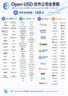

卧槽，OUSD翻车了，就是一个草台班子～
三星电子、Dunamu、新韩金融等一众韩国巨头集体出来公开打脸。
三星高管直言：根本没跟OUSD正式磋商过，看新闻才知道自己“被入伙”了，连进去要干嘛都不知道。
别的机构更搞笑，Open
Show more
Quote
Jun 30
Holy crap, 140 global giants have teamed up to release a brand-new stablecoin, Open USD!
Visa, Stripe, BlackRock, and Google have all jumped in. The kicker is that minting and redeeming are completely fee-free, and all the interest earned from the underlying reserve assets goes x.com/openstandard/s…

